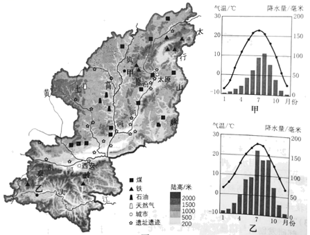
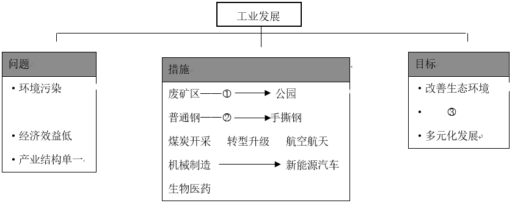
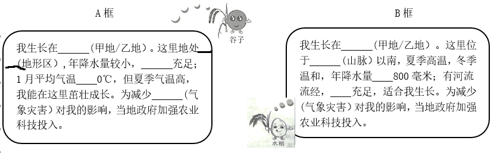

2023年北京中考地理 第27题 解析
27. 陕西省和山西省是我国传统农业和能源大省，近年来两省积极探索高质量发展之路。图为陕西省和山西省简图及甲、乙两地气温曲线和降水量柱状图。阅读图文资料，回答下列问题。
两省在发展工业的过程中，注重生态环境建设，如通过园林绿化等，将部分废矿区变身为绿树环绕的公园；加大科研力度，如研制出可应用于折叠屏手机的“手撕钢”；积极推动多元化发展，如发展航空航天等高新技术产业。

（1）陕西省简称____，山西省行政中心是____。两省有丰富的____、石油、天然气等能源矿产，正努力实现传统能源工业转型升级。根据资料，将“环境治理”“提高经济效益”“技术研发“填入框图中相应的位置。

① ________②________③________
谷子喜光照，耐寒、耐旱、耐贫瘠，去壳后称小米，主要供食用。水稻喜温，耐湿、耐热，生长期间需要较多的水分，稻谷去壳后称大米，主要做粮食，也可酿酒。
（2）根据资料，结合图中甲、乙两地的自然条件，在A框、B框中选择其一作答。

A框： 我生长在_____，属于_____地形区，年降水量较小, _____充足，1月平均气温_____0℃，但夏季气温高，我能在这里茁壮成长，为减少_____对我的影响，当地政府加强农业和科技投入。
B框：我国生长在_____，这里位于_____以南，夏季高温，冬季温和，年降水量_____800毫米，有河流流经，_____充足，适合我生长。为了减少_____对我的影响，当地政府加强农业和科技投入。
（3）有人说，陕西省和山西省应将旅游业作为重点发展方向。结合实例，联系所学简要说明你的观点。
【答案】（1） ①. 陕或秦 ②. 太原 ③. 煤炭 ④. 环境治理 ⑤. 技术研发 ⑥. 提高经济效益
（2） ①. 甲地 ②. 黄土高原 ③. 光照 ④. 低于 ⑤. 寒潮 ⑥. 乙地 ⑦. 秦岭 ⑧. 大于 ⑨. 水源 ⑩. 台风
（3）本题属于开放性题目，要先表明观点，举出实例，说明理由。赞成，主要从促就业、基础设施建设等说明理由。反对，主要从产业链来分析。
【解析】
【分析】本大题以陕西省和山西省简图及两地气温曲线和降水量柱状图为材料，涉及省级行政区的简称、产业结构的调整、气候类型的判读和农业等相关内容，考查学生掌握课本知识的能力和综合思维的地理素养。
【小问1详解】
陕西省简称陕或秦，山西省行政中心是太原。两省有丰富的煤炭、石油、天然气等能源矿产，正努力实现传统能源工业转型升级。随着工业的发展，产生了环境污染、经济效益低、产业机构单一等问题，采取的措施是：针对废矿区，进行①环境治理，改造成公园，改善生态环境；针对普通钢产业，进行②技术研发，变成手撕钢，③提高经济效益。由原来的煤炭开采，转型升级为航空航天，由机械制造转型为新能源汽车、生物医药等产业，实现多元化发展。
【小问2详解】
本题为二选一作答。谷子喜光照，耐寒、耐旱、耐贫瘠，去壳后称小米，主要供食用。水稻喜温，耐湿、耐热，生长期间需要较多的水分，稻谷去壳后称大米，主要做粮食，也可酿酒。读图可知，甲地夏季高温多雨，冬季寒冷干燥，属于温带季风气候，乙地夏季高温多雨、冬季低温少雨，属于亚热带季风气候。A框，种植谷子。我生长在甲地，属于黄土高原地形区，年降水量较小，光照充足，1月平均气温低于0℃，但夏季气温高，我能在这里茁壮成长，为减少寒潮对我的影响，当地政府加强农业和科技投入。B框种植水稻：我国生长在乙地，这里位于秦岭以南，夏季高温，冬季温和，年降水量大于800毫米，有河流流经，水源充足，适合我生长。为了减少台风对我的影响，当地政府加强农业和科技投入。
【小问3详解】
本题属于开放性的题目。要先表明态度，再说明理由。我赞成，以陕西西安为例子，西安通过积极发展旅游业，促进当地居民的就业，增加财政收入，促进基础设施的建设，促进产业的转型升级，优化了生态环境。或我不赞成。当地煤炭、电力等产业发达，应该大力发展煤炭、化工产业，确保东部地区的能源和原料的需求等。
比较分析大洲